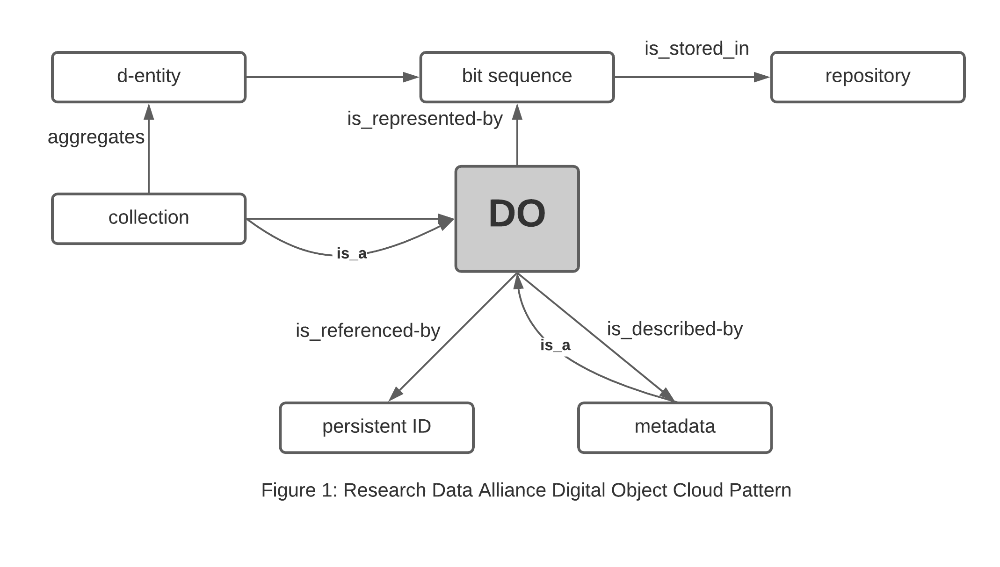

Data Services
Contents
Data Services#
The typical functional goal of this work is the development and use of a Graph that can be accessed via a triplestore (Graph Database). To do that we need a set of additional containers to support this and expose these services on the web through a single domain with https support.
Object Store
An S3 compliant object store supporting S3 APIs including S3Select. For open source this is best satisfied with the Minio Object Store. For commercial cloud AWS S3 or hosted Ceph services will work.Graph Database
Web Router (technically optional)
Gleaner Data Services (DS)#
If you wish to work with a triplestore and wish to use the default app used by OIH you can use the compose file that sets up the Gleaner Data Services environment.
This adds the Blazegraph triplestore to the configuration along with the object store.
The details of the OIH data services are found in the Data Services section.
Fig. 3 Gleaner Data Service Activity Workflow#
Typically, a user would wish to run the full Gleaner DS stack which supports both the indexing process and the serving of the resulting data warehouse and graph database capacity.
Combined, these would then look like the following where the indexing and data services shared a common object store.
Fig. 4 Gleaner Indexing and Data Service Combined#
Object store pattern#
Within in the object store the following digital object pattern is used.
This is based on the work of the RDA Digital Fabric working group.

Fig. 5 Gleaner Digital Object Pattern#
At this point the graph and data warehouse (object store) can be exposed to the net for use by clients such as jupyter notebooks or direct client calls to the S3 object APIs and SPARQL endpoint.
Gleaner Data Services (DS) Environment Variables The Docker Compose file used to launch the Gleaner DS has a set of configurable elements that can be set and passed to the orchestration system with environment variables.
These can be set manually or through the command line. A simple script to set the variables could look like:
– Environment Var settings script
The actual services can be deployed via a Docker Compose file (also works with Podman). An example of that file and details about it follow.
Let’s take a look at this.
1#!/bin/bash
2
3# domains
4export GLEANER_ADMIN_DOMAIN=admin.local.dev
5export GLEANER_OSS_DOMAIN=oss.local.dev
6export GLEANER_GRAPH_DOMAIN=graph.local.dev
7export GLEANER_WEB_DOMAIN=web.local.dev
8export GLEANER_WEB2_DOMAIN=web2.local.dev
9
10# Object store keys
11export MINIO_ACCESS_KEY=worldsbestaccesskey
12export MINIO_SECRET_KEY=worldsbestsecretkey
13
14# local data volumes
15export GLEANER_BASE=/tmp/gleaner/
16export GLEANER_TRAEFIK=${GLEANER_BASE}/config
17export GLEANER_OBJECTS=${GLEANER_BASE}/datavol/s3
18export GLEANER_GRAPH=${GLEANER_BASE}/datavol/graph
19
– Break down the compose file here
1version: '3'
2
3# ${GLEANER_ADMIN_DOMAIN}
4# ${GLEANER_OSS_DOMAIN}
5# ${GLEANER_GRAPH_DOMAIN}
6# ${GLEANER_WEB_DOMAIN}
7# ${GLEANER_WEB2_DOMAIN}
8# ${MINIO_ACCESS_KEY}
9# ${MINIO_SECRET_KEY}
10#
11# ${GLEANER_TRAEFIK}
12# ${GLEANER_OBJECTS}
13# ${GLEANER_GRAPH}
14
15services:
16 triplestore:
17 image: nawer/blazegraph
18 environment:
19 JAVA_XMS: 2g
20 JAVA_XMX: 8g
21 JAVA_OPTS: -Xmx6g -Xms2g --XX:+UseG1GC
22 ports:
23 - 9999:9999
24 labels:
25 - "traefik.enable=true"
26 - "traefik.http.routers.triplestore.entrypoints=http"
27 - "traefik.http.routers.triplestore.rule=Host(`${GLEANER_GRAPH_DOMAIN}`)"
28 - "traefik.http.middlewares.triplestore-https-redirect.redirectscheme.scheme=https"
29 - "traefik.http.routers.triplestore.middlewares=triplestore-https-redirect"
30 - "traefik.http.routers.triplestore-secure.entrypoints=https"
31 - "traefik.http.routers.triplestore-secure.rule=Host(`${GLEANER_GRAPH_DOMAIN}`)"
32 - "traefik.http.routers.triplestore-secure.tls=true"
33 - "traefik.http.routers.triplestore-secure.tls.certresolver=http"
34 - "traefik.http.routers.triplestore-secure.service=triplestore"
35 - "traefik.http.middlewares.triplestore-secure.headers.accesscontrolallowmethods=GET,OPTIONS,PUT,POST"
36 - "traefik.http.middlewares.triplestore-secure.headers.accesscontrolalloworigin=*"
37 - "traefik.http.middlewares.triplestore-secure.headers.accesscontrolmaxage=200"
38 - "traefik.http.middlewares.triplestore-secure.headers.addvaryheader=true"
39 - "traefik.http.middlewares.triplestore-secure.headers.accesscontrolallowcredentials=true"
40 - "traefik.http.middlewares.triplestore-secure.headers.accesscontrolallowheaders=Authorization,Origin,Content-Type,Accept"
41 - "traefik.http.middlewares.triplestore-secure.headers.customresponseheaders.Access-Control-Allow-Headers=Authorization,Origin,Content-Type,Accept"
42 - "traefik.http.routers.triplestore-secure.middlewares=triplestore-secure@docker"
43 - "traefik.http.services.triplestore.loadbalancer.server.port=9999"
44 - "traefik.docker.network=traefik_default"
45 volumes:
46 - ${GLEANER_GRAPH}:/var/lib/blazegraph
47 networks:
48 - traefik_default
49
50 s3system:
51 image: minio/minio:latest
52 ports:
53 - 9000:9000
54 labels:
55 - "traefik.enable=true"
56 - "traefik.http.routers.s3system.entrypoints=http"
57 - "traefik.http.routers.s3system.rule=Host(`${GLEANER_OSS_DOMAIN}`)"
58 - "traefik.http.middlewares.s3system-https-redirect.redirectscheme.scheme=https"
59 - "traefik.http.routers.s3system.middlewares=s3system-https-redirect"
60 - "traefik.http.routers.s3system-secure.entrypoints=https"
61 - "traefik.http.routers.s3system-secure.rule=Host(`${GLEANER_OSS_DOMAIN}`)"
62 - "traefik.http.routers.s3system-secure.tls=true"
63 - "traefik.http.routers.s3system-secure.tls.certresolver=http"
64 - "traefik.http.routers.s3system-secure.service=s3system"
65 - "traefik.http.services.s3system.loadbalancer.server.port=9000"
66 - "traefik.docker.network=traefik_default"
67 volumes:
68 - ${GLEANER_OBJECTS}:/data
69 environment:
70 - MINIO_ACCESS_KEY=${MINIO_ACCESS_KEY}
71 - MINIO_SECRET_KEY=${MINIO_SECRET_KEY}
72 networks:
73 - traefik_default
74 command: ["server", "/data"]
75
76 features:
77 image: fils/grow-general:latest
78 ports:
79 - 8080:8080
80 environment:
81 - S3ADDRESS=s3system:9000
82 - S3BUCKET=sites
83 - S3PREFIX=domain
84 - DOMAIN=https://${GLEANER_WEB_DOMAIN}/
85 - S3KEY=${MINIO_ACCESS_KEY}
86 - S3SECRET=${MINIO_SECRET_KEY}
87 labels:
88 - "traefik.enable=true"
89 - "traefik.http.routers.features.entrypoints=http"
90 - "traefik.http.routers.features.rule=Host(`${GLEANER_WEB_DOMAIN}`, `${GLEANER_WEB2_DOMAIN}`)"
91 - "traefik.http.middlewares.features-https-redirect.redirectscheme.scheme=https"
92 - "traefik.http.routers.features.middlewares=features-https-redirect"
93 - "traefik.http.routers.features-secure.entrypoints=https"
94 - "traefik.http.routers.features-secure.rule=Host(`${GLEANER_WEB_DOMAIN}`,`${GLEANER_WEB2_DOMAIN}`)"
95 - "traefik.http.routers.features-secure.tls=true"
96 - "traefik.http.routers.features-secure.tls.certresolver=http"
97 - "traefik.http.routers.features-secure.service=features"
98 - "traefik.http.services.features.loadbalancer.server.port=8080"
99 - "traefik.docker.network=traefik_default"
100 - "traefik.http.middlewares.features.headers.accesscontrolallowmethods=GET,OPTIONS,PUT,POST"
101 - "traefik.http.middlewares.features.headers.accesscontrolalloworigin=*"
102 - "traefik.http.middlewares.features.headers.accesscontrolmaxage=100"
103 - "traefik.http.middlewares.features.headers.addvaryheader=true"
104 - "traefik.http.middlewares.features-secure.headers.accesscontrolallowheaders=*"
105 - "traefik.http.middlewares.features-secure.headers.customresponseheaders.Access-Control-Allow-Headers=*"
106 networks:
107 - traefik_default
108
109networks:
110 traefik_default:
111
NOTE: DS also needs the object -> graph sync (via Nabu) NOTE: Should also add in (here or to the side) the ELT local Data Lake to Data Warehouse path (ala CSDCO VaultWalker)
